LakeScope › CA
Shasta Lake today
Updated 2026-11-14 - Atlas Labs
Clear water, 63°F water, level falling, 17 ft below normal, calm this morning.
Water level
970.95 ft
California Dept. of Water Resources - 2026-11-13
7-day trend: falling (-0.58 ft). Compared with normal for this date: -16.8 ft (same weeks, 2016-2025).
Water clarity and algae
Clear water Last clear view: a few days ago. 1 cloudy pass since.
Surface temperature
63°F
seen from space on 2026-11-12

Ice
Open - 0% ice cover
Estimate from weather and satellite, not a measurement. Check the ice yourself before going on it.
Weather, next 3 days
| Day | Sky | High / low | Wind | Rain |
|---|---|---|---|---|
| Saturday | Chance Light Rain | 54 / 48°F | 5 mph S | 35% |
| Sunday | Rain | 54 / 46°F | 6 mph S | 100% |
| Monday | Chance Light Rain | 51 / 42°F | 2 mph W | 27% |
Sunrise 06:55 - sunset 16:51 - Waxing crescent. National Weather Service.
Get the LakeScope app: alerts and the 3-D view of Shasta Lake